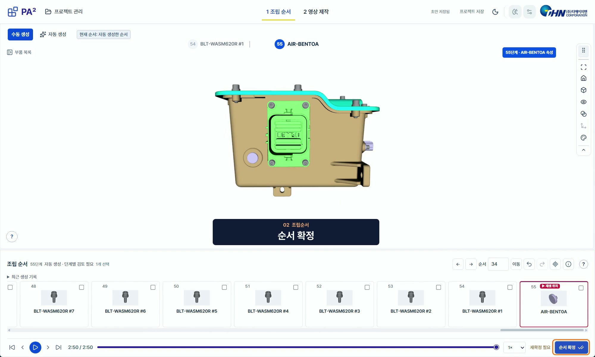
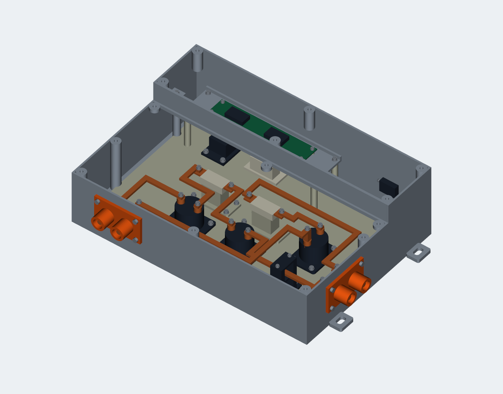

기업 연계 프로젝트 · THN
전동화 조립을 위한
3D 기반 공법 자동화 프로그램 개발
3D CAD 데이터로 조립 순서를 검토하고
작업 안내 영상을 만드는 프로그램
DB 구현안을 작성하고 DB·GUI를 개발했습니다.
프로젝트 저장·복원, 부품 선택과 조립 순서 편집을 담당했습니다.

개발 배경
개발 배경과 목표
PILOT개발팀에서는 3D 도면을 받아 조립 가능 여부와 순서를 검토한 뒤, 작업자에게 보여 줄 동적 공법 영상을 제작했습니다. 조립 순서가 바뀌면 검토와 영상 편집을 다시 해야 했습니다. 이 반복 작업을 줄이기 위해 순서 생성·편집·영상 출력을 한 프로그램에서 처리하도록 개발했습니다.
기존 업무
- 경험에 의존해 조립 순서를 판단
- 순서 변경 시 조립 가능 여부를 다시 검토
- 조립 장면과 작업 정보를 수작업으로 편집
- 순서·검토 이력을 개인별로 관리
개발 목표
- 3D 형상 기반의 조립 순서 초안 생성
- 부품·방향별 CAD 검사로 조립 가능 여부 확인
- 확정 순서를 반영한 동적 공법 영상 생성
- 프로젝트와 작업 이력을 저장해 재사용
팀 전체 구현
프로그램 전체 구조
- 01 · 사용자 입력
프로젝트 생성
차종·품종·프로젝트명 설정
완제품·부품 STEP 파일 등록 - 02 · 자동 처리
순서 생성·검사
형상 분석과 조립 단위 구성
분해 순서·방향을 조립 초안으로 변환 - 03 · 사용자 판단
검토·편집·확정
담당 · GUI 개발부품 선택·조립 순서 편집
단계별 재생·화면 전환 - 04 · 자동 처리
영상 생성
확정 순서와 작업 정보를 합성
동적 공법 영상 MP4 출력
AI 추천부품·방향의 검사 우선순위를 제안하고, CAD 기반 검사로 실제 통과 여부를 확인합니다.
담당 · DB·이력 관리각 단계의 프로젝트·확정 순서·작업 이력을 연결해 작업 복원과 데이터 재사용을 지원합니다.
담당 업무 · DB
DB 구현안 작성과 구축
프로젝트·부품·확정 조립 순서·작업 및 학습 이력을 관리할 DB 구현안을 작성하고, 이를 바탕으로 DB를 구축했습니다. STEP·MP4·모델 파일은 로컬 폴더에 저장하고 DB에는 파일 경로와 관련 정보를 기록했습니다.
로컬 폴더
STEP · MP4 · 모델 파일
DB 저장·관리
파일 경로 · 프로젝트 · 부품 정보
확정 순서 · 작업 및 학습 이력
작업 복원·편집
작업 복원 · 편집 · 영상 생성
학습 데이터 재사용
특징 · 확정 순서 · 방향
저장 항목과 관계 정리프로젝트별로 입력 파일, 부품 정보, 조립 순서와 이력을 구분하고 각 항목의 연결 관계를 구현안에 정리했습니다.
DB와 파일 저장소 구성SQLite와 SQLAlchemy로 프로젝트·분석 결과·조립 계획을 저장했습니다. STEP·형상 캐시·MP4는 로컬 파일로 관리하고 DB에서 참조하도록 구성했습니다.
저장한 작업 불러오기프로젝트를 다시 열면 저장한 부품 구성과 조립 순서를 불러옵니다. 사용자 확정본을 보관해 영상 생성과 학습용 데이터에 활용하도록 했습니다.
주요 저장 항목 ＋
| 대상 | 저장 내용 |
|---|---|
| 프로젝트·입력 파일 | 차종·품종·프로젝트명, 파일 해시·경로·역할 |
| 분석 결과 | 부품 그룹·구성 바디·접촉 관계를 분석 스냅샷에 연결 |
| 조립 계획 | 단계별 순서·이동 방향·거리·작업 안내 |
| 사용자 확정본 | 확정 시점의 계획을 JSON 스냅샷으로 보관 |
| 실제 파일 | STEP·형상 캐시·MP4를 로컬 폴더에 저장하고 DB에서 참조 |
사용 기술Python · SQLite · SQLAlchemy
담당 업무 · GUI
3D 뷰어와 조립 순서 편집 GUI
프로그램 로직을 확인하며 3D 뷰어, 부품 정보와 조립 순서 편집 GUI를 개발했습니다. 부품을 선택하면 모델과 정보를 함께 확인하고, 순서를 수정한 뒤 단계별로 재생하며 검토할 수 있도록 구성했습니다.

3D 모델·부품 정보
목록에서 선택한 부품과 3D 모델의 표시를 연동하고, 해당 부품의 정보를 확인하도록 구성했습니다.
조립 순서 편집
자동 생성된 초안을 순서 목록에 표시하고, 사용자가 순서와 작업 내용을 수정할 수 있도록 했습니다.
단계별 확인·화면 전환
선택한 조립 단계의 움직임을 미리 보고, 편집·확정·영상 생성 화면으로 이동하는 동작을 구현했습니다.
사용 기술Python · PySide6 / Qt · VTK 연동
수정·보완
예외 부품 처리와 현업 피드백 반영
LV 전선·락킹 부품의 예외 처리
- 문제
- 유연한 LV 전선과 탄성으로 체결되는 락킹 부품은 강체 CAD의 간섭 검사만으로 실제 조립 가능 여부를 판단하기 어려웠습니다.
- 조치
- 부품 특성을 검토하고, 해당 부품을 자동 정밀 검사의 예외로 지정했습니다.
- 결과
- 자동 검사 대상과 별도 검토 대상을 구분해 사용자가 실제 조립 조건을 확인하도록 했습니다.

기준 부품 누락·카메라 동작 수정
- 문제
- 조립의 기준이 되는 부품이 순서 목록에서 빠져 전체 구성을 확인하기 어려웠습니다.
- 조치
- 기준 부품이 순서 목록에 표시되도록 수정하고, 목록·그룹화·분해 방향 관련 동작을 점검했습니다.
- 결과
- 기준 부품을 포함한 조립 순서를 목록에서 확인할 수 있도록 보완했습니다.
멘토 피드백에 따라 3D 뷰어의 360도 회전, 사용자 지정 카메라 기본값과 영상 템플릿도 개선했습니다.
멘토링 기록과 수정본 확인
초기에는 현업에서 이 프로그램을 어떻게 쓰는지 몰라 개선할 항목의 우선순위를 정하기 어려웠습니다. 멘토에게 불편한 점과 수정이 필요한 이유를 묻고 회의록으로 남겼습니다. 피드백을 반영한 수정본도 수차례 보내 다시 확인받았습니다.
현장 방문에서는 제공받은 고전압 정션박스의 조립 우선순위와, 향후 다른 제품에 적용할 때 확인해야 할 조건도 질문하고 기록했습니다.
검증 자료·발표
AI 검증용 샘플 제작과 발표
검증용 파생 샘플 제작 담당
제공받은 고전압 정션박스(HVJB) 데이터로 파생 샘플을 제작했습니다. AI가 추천한 부품·방향 검사 우선순위의 성능을 검증하기 위한 자료였습니다.
AI가 검사 후보의 순위를 정하고 CAD 기반 검사에서 분해 가능 여부를 확인하는 원리를 공부했습니다.
기술 정리·최종 발표 담당
최종 PPT 제작을 맡아 프로그램 구조와 시연·결과를 정리했습니다. 발표에서는 AI 추천, 영상 생성 기술, DB 저장 및 이력 관리를 설명했습니다. 개발 중에는 회의 내용과 테스트 오류, 개선 사항을 기록했습니다.

팀의 AI 적용 비교 결과 보기 ＋
최종 발표자료에 제시한 팀의 비교 결과입니다. 모델 학습에는 파생 샘플 55개를 사용했습니다. 제 담당은 별도의 검증용 샘플 제작과 추천 원리·결과 발표였습니다.
147초→119초
약 19% 감소24회→9회
62.5% 감소시간은 발표자료에 표시된 반올림 값 기준입니다. 전체 업무시간 75% 단축과는 별도의 지표입니다.
시연·성과
프로그램 시연과 결과
최종 발표에 사용한 시연 영상입니다. 프로젝트 생성부터 3D 모델 확인, 조립 순서 검토와 영상 생성까지 담았습니다.
8시간 → 2시간
약 75% 단축팀의 작업시간 비교 결과
현업 멘토의 실제 비교 확인에 따르면 작업시간이 기존 약 8시간에서 약 2시간으로 줄었습니다.
이 중 저는 작업 데이터를 저장·복원하는 DB와 검토·편집 GUI를 담당했습니다.
멘토가 확인한 비교 사례 기준이며, 제품에 따라 작업시간은 달라질 수 있습니다.
한계·개선 방향
적용 범위와 남은 과제
프로젝트를 마치며
처음에는 오류가 나지 않으면 기능이 완성됐다고 생각했습니다. 멘토가 직접 사용하며 짚어 준 불편을 수정하면서, 어떤 순서로 확인하고 편집하는지가 개발 기준에 빠져 있었다는 점을 알게 됐습니다. 이후에는 수정 요청의 이유와 확인 결과도 함께 기록했습니다.